Iniciativa de conservación UMSA · ASDI · CIMTA
LagoMoa
Hidroecoturismo comunitario, científico y de aventura
Descubre el segundo lago más grande del departamento de La Paz en el corazón de la TCO Tacana. Un modelo pionero que integra ciencia hidrológica, protección de fauna amenazada y empoderamiento de la mujer tacana.
San Buenaventura, La Paz, Bolivia · Cerca del Parque Nacional Madidi
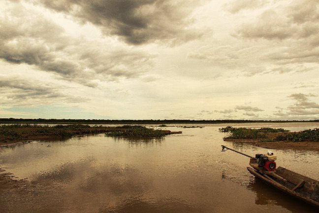
- 16 km²Espejo de agua natural
- 800 km²Superficie de la cuenca
- 45+Especies de fauna registradas
- 2,900+Pobladores tacanas beneficiarios
Turismo que conserva
Así tu visita protege el Lago Moa
Cada viajero se convierte en aliado de la selva. Los ingresos del turismo quedan en las comunidades tacanas y hacen que el bosque en pie valga más que el bosque talado.
Reservas tu experiencia
Eliges un paquete o una visita científica coordinada directamente con la comunidad.
Las familias tacanas generan ingresos
Como guías, cocineras, artesanas, lancheros y anfitriones, con especial participación de la mujer tacana.
Un fondo para la conservación
Parte de cada paquete se destina al fondo comunitario que cuida el bosque, el lago y su fauna.
El bosque sigue en pie
Menos chaqueos y tala, más hábitat para el jaguar, la londra y cientos de especies.
Urgencia ecológica
Protegiendo un ecosistema bajo amenaza
El Lago Moa y su cuenca hidrográfica enfrentan una presión sin precedentes que pone en riesgo el suministro de agua y la rica biodiversidad próxima al Parque Nacional Madidi.
Chaqueos e incendios forestales
Las quemas agrícolas descontroladas destruyen el bosque primario de recarga hídrica, alterando los microclimas y secando los arroyos que nutren al lago.
Tala y explotación maderera
La pérdida de árboles ancestrales acelera la erosión de los suelos ribereños, provocando colmatación y pérdida de profundidad en el espejo de agua.
Cambio climático y sequías
Olas de calor extremas y temporadas de estiaje prolongadas demandan alternativas sostenibles urgentes para garantizar agua y alimentos al pueblo Tacana.
El ecoturismo como escudo de vida
Al generar ingresos directos para las familias indígenas mediante el guiado científico, la gastronomía local y la artesanía sustentable, transformamos la conservación en el motor económico de la región, evitando la deforestación y salvaguardando a los animales en peligro.
- Cero tala en zonas protegidas
- Empoderamiento de la mujer tacana
- Monitoreo hídrico UMSA
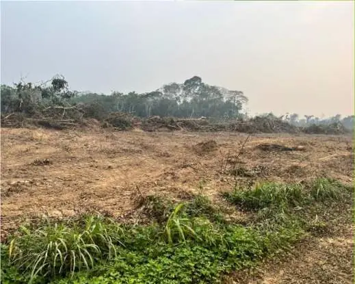
Explora el Moa

Pueblo Tacana
Saberes milenarios, tejidos, cocina y las comunidades que te reciben.
Conocer al pueblo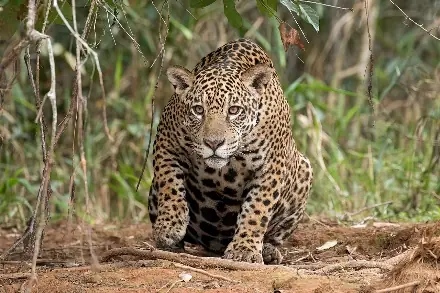
Fauna
Jaguares, londras, caimanes, aves y peces: 48 especies registradas.
Ver la fauna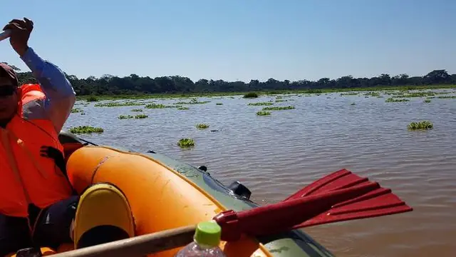
Experiencias
Navega, camina hasta las cascadas, cocina y participa en ciencia ciudadana.
Ver experiencias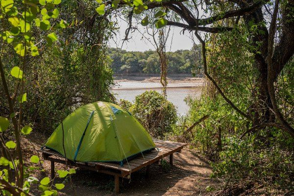
Paquetes
Tres opciones de 3 a 5 días, con itinerario, alojamiento y guía tacana.
Ver paquetesQuienes hacen posible el proyecto
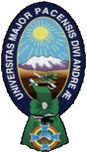
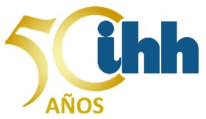
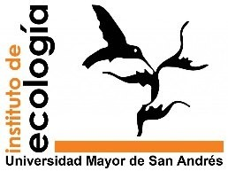
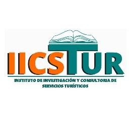
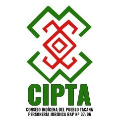
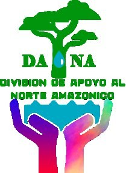
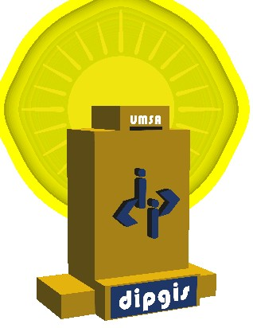
Con el CIMTA (Consejo Indígena de Mujeres Tacanas) y el CIPTA (Consejo Indígena del Pueblo Tacana).